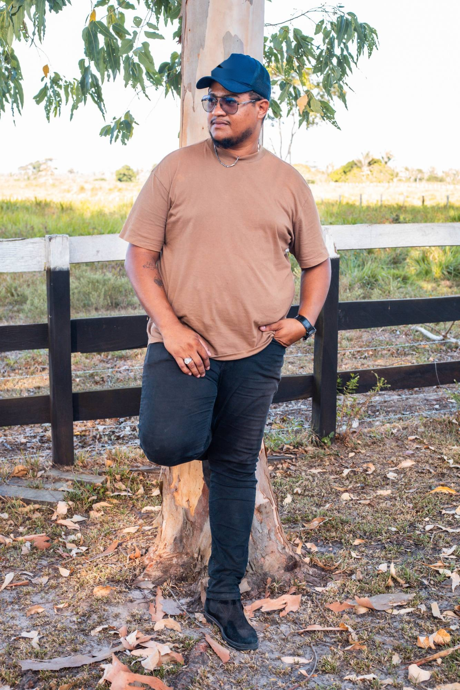
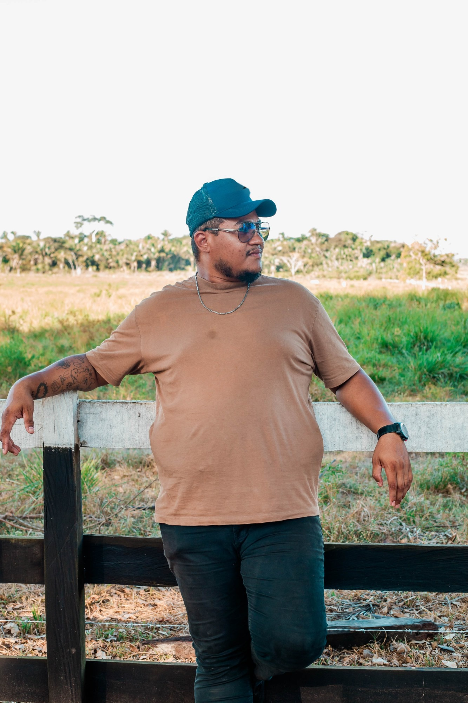

Seu conteúdo só cresce se você sabe o que o povo tá consumindo.
Pesquisa antes de criar. Sempre.Qual assunto você quer viralizar? Comenta aí e vem crescer comigo.
Segue @lindsonalmeida_pra mais tática de crescimento

Causo real
E não crescia NADA.
Postava do jeito que achava certo, sem olhar pro que o PÚBLICO tava consumindo.
Era tipo tocar música desafinada esperando que alguém gostasse.
Esses são os que o algoritmo tá recomendando AGORA.
Você vai perceber que tem um PADRÃO do que viraliza.
